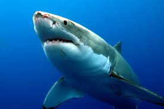

O Tubarão Branco

Qual foi o maior tubarão-branco já encontrado?
- O Ministério da Pesca da Austrália identificou e classificou o maior tubarão branco jamais encontrado. Este exemplar de Carcharodon carcharias, ou tubarão branco, é uma fêmea com 30 anos de idade, que mede 5,3 metros de comprimento e pesa 1,6 tonelada
- Existem ocorrências do grande tubarão branco nas águas oceânicas no sul do Brasil e raros registros até mesmo mais a sudeste. Porém, a grande maioria não tem comprovação de ocorrência sendo, portanto, meras conjecturas. No Brasil, os casos mais frequentes acontecem em Pernambuco, no Nordeste.24 de jan. de 2024
Voltar a página inicial